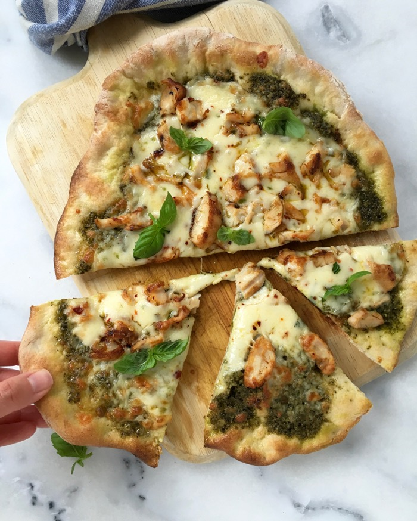

Easy pizza dinner that uses chicken and pesto for a great meal.
If fontina is not available at your store, just substitute
mozzarella.
Ingredients
- ½ cup pesto basil sauce
- 1 (12 inch) pre-baked pizza crust
- 2 cups cooked chicken breast strips
- 1 (6 ounce) jar artichoke hearts, drained
- ½ cup shredded fontina cheese
Directions
- Preheat the oven to 450 degrees F (230 degrees C).
-
Spread pesto sauce over the pizza crust. Arrange chicken
pieces and artichoke hearts over the sauce, and sprinkle
with cheese.
-
Bake for 8 to 10 minutes in the preheated oven, until cheese
is melted and lightly browned at the edges.